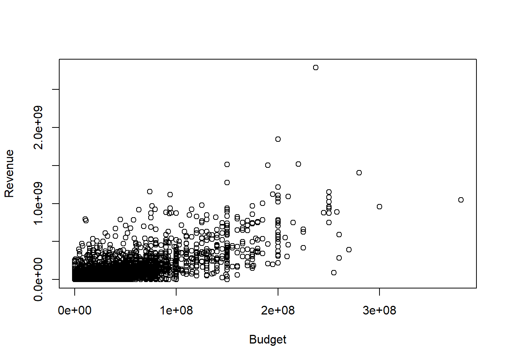
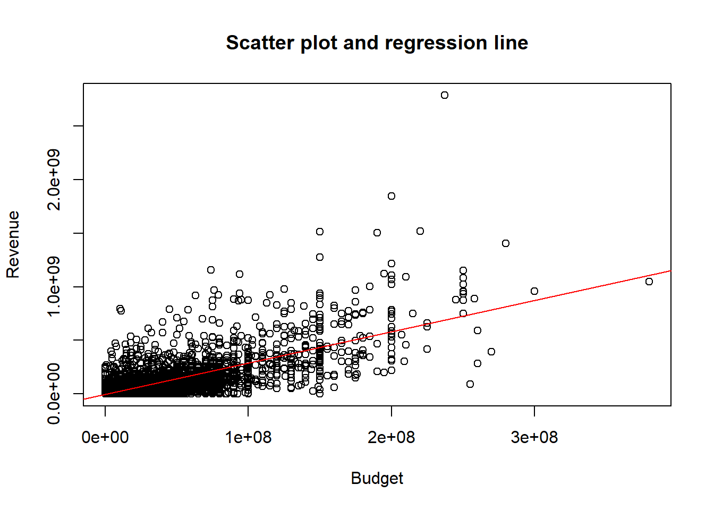

7 Regression analysis
7.1 Basic linear model
You have probably all learnt about the linear regression model in a previous econometrics class where \[Y = \beta_1 X_1 + \beta_2 X_2 + \ldots + \beta_{k} X_{k} + \beta_{k+1} + e \] and \[E(e \mid X_1, X_2, \ldots, X_{k}) = 0.\] That is, the conditional mean of the outcome variable \(Y\) is a linear function of the regressors \(X_1, X_2, \ldots, X_{k}\).
When we have a random sample of size \(n\), we can also write \[Y_i = \beta_1 X_{i1} + \beta_2 X_{i2} + \ldots + \beta_k X_{ik} + \beta_{k+1} + e_i, \qquad i = 1, 2, \ldots, n.\] Our goal is to estimate the coefficients \(\beta_1, \ldots, \beta_{k+1}\) using the data \(\{Y_i, X_{i1},X_{i2},\ldots, X_{ik}\}^n_{i=1}\).
7.2 Empirical example
We will now see how to run regressions in R using the movie data set. Again, you can load it using
Suppose we are interested in studying how the budget of a movie is related to its revenue and we model the relationship as: \[revenue_i = \beta_1 budget_{i} + \beta_2 + e_i\] Before we run a regression, let’s look at a scatter plot of the relevant variables:

Clearly, movies with higher budgets tend to have higher revenues. To estimate the regression coefficients, you can use the lm() command:
lm_result <- lm(formula = data_set$revenue~data_set$budget)
lm_summary <- summary(lm_result)
lm_summary##
## Call:
## lm(formula = data_set$revenue ~ data_set$budget)
##
## Residuals:
## Min 1Q Median 3Q Max
## -653371282 -35365659 2250851 8486969 2097912654
##
## Coefficients:
## Estimate Std. Error t value Pr(>|t|)
## (Intercept) -2.630e+06 1.970e+06 -1.335 0.182
## data_set$budget 2.923e+00 3.940e-02 74.188 <2e-16 ***
## ---
## Signif. codes: 0 '***' 0.001 '**' 0.01 '*' 0.05 '.' 0.1 ' ' 1
##
## Residual standard error: 111200000 on 4801 degrees of freedom
## Multiple R-squared: 0.5341, Adjusted R-squared: 0.534
## F-statistic: 5504 on 1 and 4801 DF, p-value: < 2.2e-16Think about how you can interpret the estimated slope coefficient.
We can also plot the regression line in the scatter plot:
b0 <- lm_summary$coefficients[1]
b1 <- lm_summary$coefficients[2]
## Plot all:
plot(y=data_set$revenue, x=data_set$budget,
xlab="Budget",
ylab="Revenue",
main="Scatter plot and regression line")
abline(a=b0, b=b1, col="red")
Let’s now see if a higher budget also implies a higher rating:
lm_result_rating <- lm(data_set$vote_average~data_set$budget)
lm_summary_rating <- summary(lm_result_rating)
lm_summary_rating ##
## Call:
## lm(formula = data_set$vote_average ~ data_set$budget)
##
## Residuals:
## Min 1Q Median 3Q Max
## -6.0224 -0.5131 0.1139 0.7462 3.9872
##
## Coefficients:
## Estimate Std. Error t value Pr(>|t|)
## (Intercept) 6.013e+00 2.108e-02 285.190 < 2e-16 ***
## data_set$budget 2.732e-09 4.215e-10 6.482 9.95e-11 ***
## ---
## Signif. codes: 0 '***' 0.001 '**' 0.01 '*' 0.05 '.' 0.1 ' ' 1
##
## Residual standard error: 1.19 on 4801 degrees of freedom
## Multiple R-squared: 0.008676, Adjusted R-squared: 0.00847
## F-statistic: 42.02 on 1 and 4801 DF, p-value: 9.949e-11Notice that the estimated slope coefficient is tiny. Does that mean that the rating is unrelated to the budget?
The budget is often huge. For a better interpretation of the coefficients, define the budget in millions as
look at summary statistics of the variables
## Min. 1st Qu. Median Mean 3rd Qu. Max.
## 0.000 5.600 6.200 6.092 6.800 10.000## Min. 1st Qu. Median Mean 3rd Qu. Max.
## 0.00 0.79 15.00 29.05 40.00 380.00and redo the analysis:
lm_result_rating <- lm(formula = data_set$vote_average~data_set$budget_mil)
lm_summary_rating <- summary(lm_result_rating)
lm_summary_rating ##
## Call:
## lm(formula = data_set$vote_average ~ data_set$budget_mil)
##
## Residuals:
## Min 1Q Median 3Q Max
## -6.0224 -0.5131 0.1139 0.7462 3.9872
##
## Coefficients:
## Estimate Std. Error t value Pr(>|t|)
## (Intercept) 6.0128066 0.0210835 285.190 < 2e-16 ***
## data_set$budget_mil 0.0027325 0.0004215 6.482 9.95e-11 ***
## ---
## Signif. codes: 0 '***' 0.001 '**' 0.01 '*' 0.05 '.' 0.1 ' ' 1
##
## Residual standard error: 1.19 on 4801 degrees of freedom
## Multiple R-squared: 0.008676, Adjusted R-squared: 0.00847
## F-statistic: 42.02 on 1 and 4801 DF, p-value: 9.949e-11Do think that the budget has a large impact on the rating?
Of course, we are not limited to one regressors. To include three regressors, can use lm(formula = Y~X1+X2+X3). We will return to regression analysis later in the semester.
7.3 Exercises VII
Exercise 1:
In the previous section, we looked at Monte Carlo simulations in a very simple setting. We can analyze analogous issues in other settings, such as the linear regression model. Also in this case, we have parameters (the regression coefficients) and estimators (the OLS estimators). The parameters are random and have certain known small and large sample properties that you discussed in the theoretical part of the class. Many other small sample properties, such as actual coverage rates of confidence intervals are unknown, but can be studies in Monte Carlo simulations.
Let \[Y_i = \beta_1 X_{i1} + \beta_2 X_{i2}+ \beta_3 + e_i, \qquad i = 1, 2, \ldots, n.\] where \[\begin{pmatrix}X_{i1}\\X_{i2}\\\end{pmatrix} \sim N\left( \begin{pmatrix}2\\-3 \end{pmatrix}, \begin{pmatrix}1& \rho \\ \rho &1 \end{pmatrix} \right)\] and \((\beta_1, \beta_2, \beta_3) = (2,1,-1)\). Let \(e_i \sim U[-2,2]\) and assume that \(e_i\) is independent of \((X_{i1},X_{i2})\). Assume that the data is a random sample. Let \((\hat{\beta}_1, \hat{\beta}_2, \hat{\beta}_3 )\) be the OLS estimator of \((\beta_1, \beta_2, \beta_3)\).
For different values of \(n\) and \(\rho\) use simulations to calculate
- \(E(\hat{\beta}_1)\),
- \(Var(\hat{\beta}_1)\),
- the probability that \(\beta_1\) is in a \(95\%\) confidence interval,
- the expected length of the confidence interval,
- the probability that we reject \(H_0: \beta_1 = 2\) using a two-sided t-test and a \(1\%\) significance level, and
- the probability that we reject \(H_0: \beta_1 = 1.8\) using a two-sided t-test and a \(1\%\) significance level.
Discuss the results.
How do you think the results will change if \(X_{i1}\) and \(e_i\) are correlated?
Exercise 2:
Start with the help file ?lm() of the linear model - one of the functions most often used in R - and try to answer these questions:
- How do you estimate a model without a constant?
- In what setting could
na.action = na.excludebe more useful to you than the function’s default value? - For a given lm-object, what does the function
summarydo?
Exercise 3:
Assume that \(X \sim U[0,1]\) and \(Y \sim U[0,1]\) are independent random variables. For different sample sizes (\(n \in\{ 2, 5, 10, 100, 1000\}\)) draw two i.i.d. samples of \(X\) and \(Y\) and regress \(Y\) on \(X\) for both samples. Using a Monte-Carlo simulation, approximate the probability that the two corresponding regression lines intersect on \([0,1]\times [0,1]\). Do the results depend on the sample size?